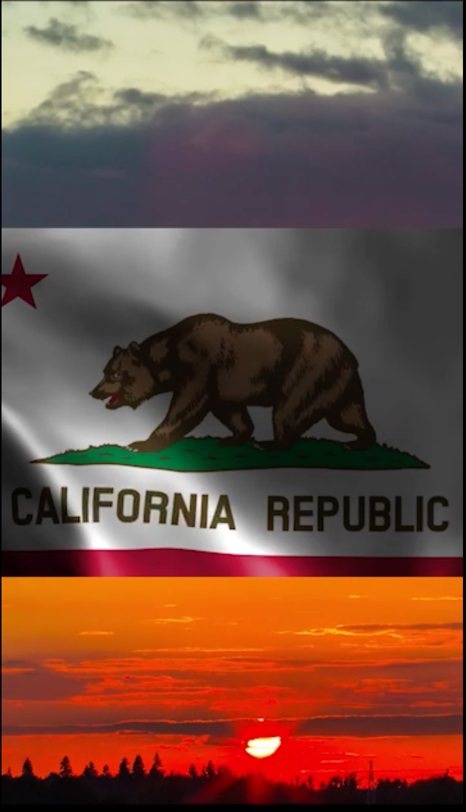
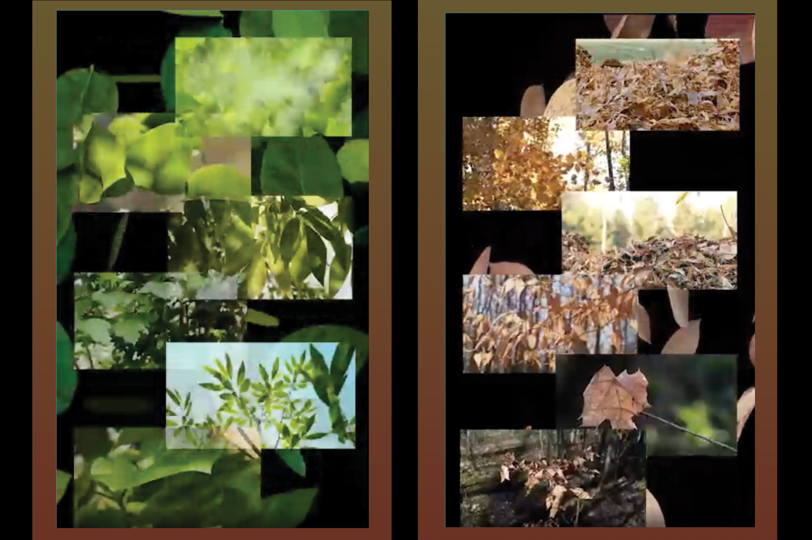
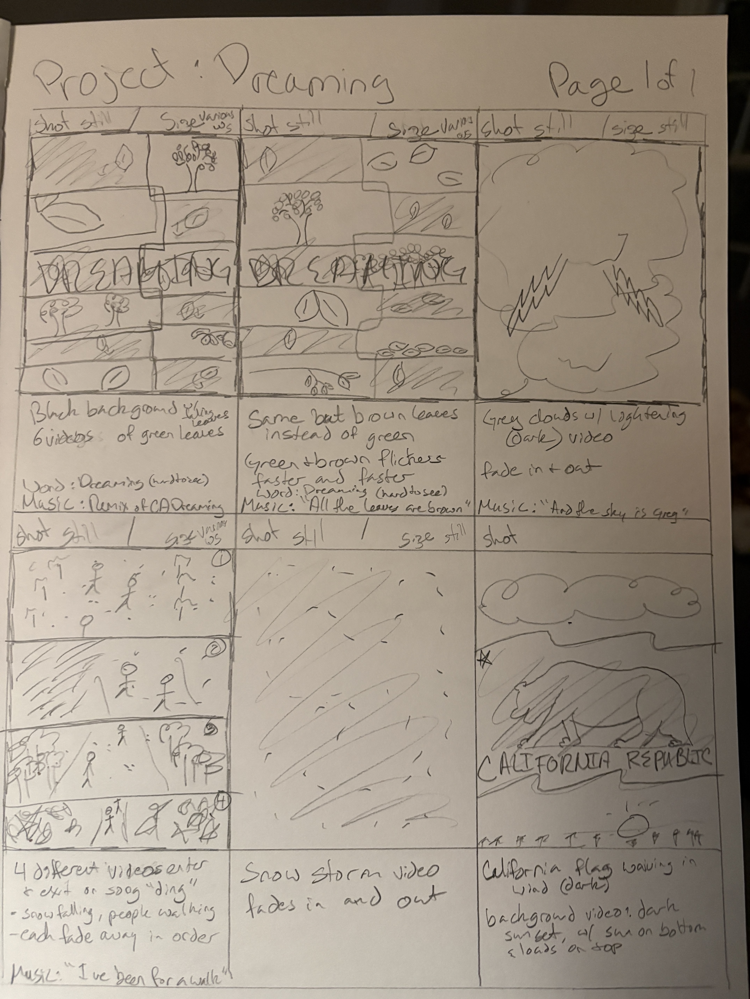
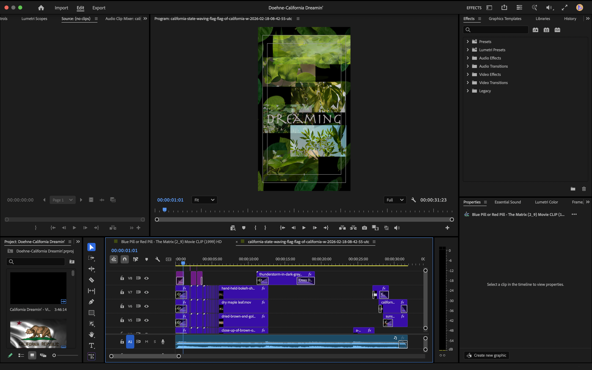

FALL / THE OPENING
Falling leaves establish movement, atmosphere, and a sense of nostalgia.
Adobe Photoshop
Adobe Premiere Pro
Motion Design
Visual Compositing
Video Editing
Visual Concept
Storyboard
Motion Graphic
Edited Music Video
Music: “California Dreamin’”
Vince Cox feat. Laura Currie
Licensed assets: Envato Elements
MOOD / MUSIC / MEMORY
California Dreamin’ reimagines the classic song through a dark, atmospheric visual journey. Seasonal imagery, layered textures, and restrained movement translate the music into a story of nostalgia and changing landscapes.


VISUAL LANGUAGE
The visual direction follows the darker interpretation of the song, using changes in season, color, and atmosphere to reflect its emotional progression.
FROM SOUND TO STORY
I selected a darker cover version and built the visual sequence around its mood and musical progression. A thirty-second section became the foundation for the final edit.
Falling leaves establish movement, atmosphere, and a sense of nostalgia.
Snow and colder imagery deepen the song’s reflective mood.
A rippling California state flag sits against a dramatic sunset, bringing the visual journey to a close.
Storyboarding, compositing, and editing brought the images together, with transitions and movement timed to the music.

BEHIND THE SCENES
A look inside the editing process.

Your vision. In motion.
CONTACT ME